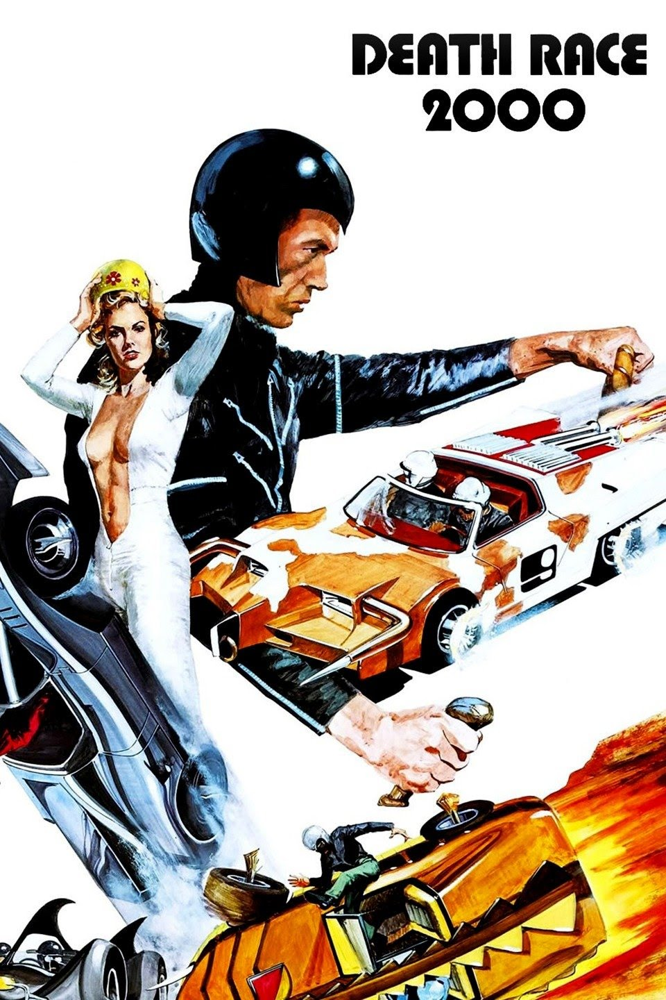

1979 brachen die Vereinigten Staaten zusammen, was zu massiven Unruhen und wirtschaftlichem Zusammenbruch führte. Die Regierung wurde in ein totalitäres Regime nach Kriegsrecht umstrukturiert. Um die Bevölkerung zu befrieden, hat die Regierung das Transcontinental Road Race organisiert, bei dem eine Gruppe von Fahrern in ihren leistungsstarken Autos quer durch das Land fährt, die für Gewalt, Blut und unschuldige Fußgänger berüchtigt sind und Bonuspunkte erhalten.
Im Jahr 2000 gehören zu den fünf Fahrern des zwanzigsten jährlichen Rennens, die sich an professionelle Wrestling-Leute halten und Themenautos richtig fahren, Frankenstein, der mysteriöse schwarz gekleidete Champion und Nationalheld; Maschinengewehr Joe, ein harter Gangster aus Chicago; Unglück Jane, ein Cowgirl; Matilda The Hun, eine Neonazi; Und Nero der Held, ein römischer Gladiator. Jede Einheit mit einem Navigator des anderen Geschlechts, der implizit auch als Liebesinteresse fungiert. Das Rennen wird im nationalen Fernsehen von einem Nachrichtenteam unter der Leitung des ausgelassenen und komischen Junior Bruce, der verführerischen Matrone Grace Pander und des lakonischen Kommentators Harold (eine Parodie auf Howard Cosell) übertragen. Das Spiel hat sadistische Regeln, nach denen das Töten von Babys und behinderten Menschen dem Spieler zusätzliche Punkte gibt. Maschinengewehr Joe ist die Hauptopposition gegen Frankenstein.
Eine Widerstandsgruppe unter der Führung von Thomasina Paine, einem Nachkommen des amerikanischen Revolutionärs Thomas Paine, plant, gegen das Regime des Präsidenten zu rebellieren, indem sie das Rennen sabotiert, die meisten Fahrer tötet und Frankenstein als Hebel gegen den Präsidenten nimmt. Die Gruppe wird von Paine Annies Urenkelin, Frankensteins letztem Navigator, unterstützt. Sie plant, ihn in einen Hinterhalt zu locken, um ihn durch einen Doppelgänger zu ersetzen. Trotz einer von Frau Paine selbst gehackten nationalen Sendung wird das Brechen des Rassenwiderstands von der Regierung gedeckt und stattdessen den Franzosen vorgeworfen, die auch beschuldigt werden, die Wirtschaft und das System des Landes ruiniert zu haben. Telefon.
Zunächst funktioniert der Widerstandsplan. Nero wird getötet, als er auf eine Puppe läuft, die vom Widerstand gefangen wurde. Dieser macht einen Fehler für ein königliches Baby und führt ihn aus, um Punkte zu sammeln. Matilda fährt eine Klippe entlang, während sie einem falschen Umweg folgt, den der Widerstand geschaffen hat. Unglück Jane treibt versehentlich eine Landmine. Damit bleiben nur Frankenstein und Machine Gun Joe im Rennen.
Como Frankenstein no sobrevive a todos los intentos realizados en su vida durante la carrera, Annie llega a descubrir que el Frankenstein que ella sabe es cualquier cosa, pero no es un oficial de gobierno dispuesto, ni es el hombre original. El Frankenstein actual es, de hecho, uno de un número de alas al azar del estado entrenado exclusivamente a la raza en la identidad. "Cuando uno se agota, traen otro", le dice a Annie. El actual Frankenstein también revela que tiene sus propios planes: cuando gane la carrera y estreche la mano con el Sr. Presidente, detonará una granada que se ha implantado en su prótesis de la mano derecha (la llama "granada de mano"), Que él ha guardado ocultado guardando su guante encendido en todo momento (incluso mientras que desnudó). Su plan va mal, sin embargo, cuando la ametralladora Joe ataca y Annie lo mata usando la granada de "mano" de Frankenstein.
Después de haber superado con éxito a los pilotos rivales ya la Resistencia, Frankenstein es declarado el ganador, aunque está herido e incapaz de llevar a cabo su plan original de ataque con granadas. Annie prefiere el disfraz de Frankenstein y planea apuñalar al Sr. Presidente mientras está en el podio. Mientras el presidente felicita a "Frankenstein" por su victoria, en el proceso declarando la guerra a los franceses y nombrando a Frankenstein como líder de la guerra, Annie es herida por su propia abuela, desesperada por venganza contra Frankenstein por haberla matado supuestamente Durante la carrera (en realidad sólo la había drogado). El verdadero Frankenstein se aprovecha de la confusión y acaricia el escenario del presidente con su coche, finalmente cumpliendo su deseo de matarlo por toda la vida.
En el epílogo, Annie y Frankenstein se casan. Frankenstein, ahora Presidente, suprime la carrera y planea reconstruir el país. Sin embargo, Junior Bruce comienza a protestar contra ella. Cuando no puede encontrar una razón moral para continuar la carrera, comienza a gritar que es una forma de vida, para mantener a América satisfecha, para entretener y dar a la gente lo que quieren, ahora desesperado para que la carrera perpetúe. Frankenstein, molesto, lo ejecuta con su coche y se va con Annie a los aplausos y aplausos de la multitud.